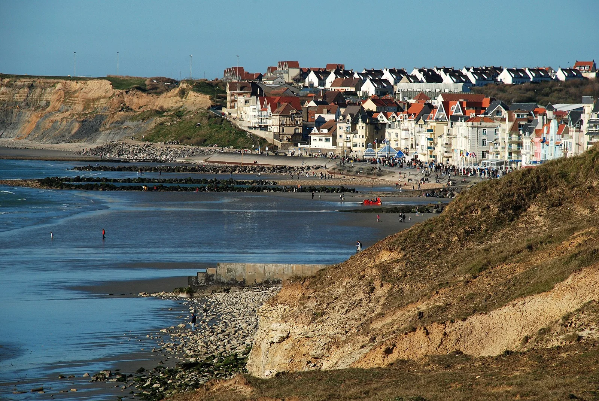

Wimereux
Pas-de-Calais, France · kitesurf, baignade, bodyboard

Petite station balnéaire Belle Époque proche de Boulogne, plage de galets et sable, sympa pour le kite et la baignade surveillée.
- Lieu
- Pas-de-Calais, France
- Niveau
- Débutant
- Activités
- kitesurf, baignade, bodyboard
- Type d'eau
- Mer / océan
- Coordonnées
- 50.77, 1.61 (position approximative du secteur)
Dangers à connaître
- Galets glissants à l'entrée.
- Courants par fort coefficient.
Le conseil d'Ocean Buddy
Baignade surveillée l'été : reste entre les drapeaux.
Ouvrir dans Ocean Buddy Télécharger sur l'App Store
Source : Description historique Ocean Buddy · vérification externe en attente.